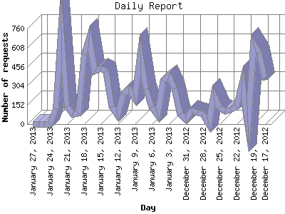

The Daily Report identifies the activity for each day within the reporting period. Remember that one page hit can result in several server requests as the images for each page are loaded.

| Day | Number of requests | Number of page requests | |
|---|---|---|---|
| 1. | December 17, 2012 | 353 | 137 |
| 2. | December 18, 2012 | 568 | 144 |
| 3. | December 19, 2012 | 639 | 150 |
| 4. | December 20, 2012 | 0 | 0 |
| 5. | December 21, 2012 | 333 | 70 |
| 6. | December 22, 2012 | 137 | 53 |
| 7. | December 23, 2012 | 111 | 61 |
| 8. | December 24, 2012 | 102 | 59 |
| 9. | December 25, 2012 | 129 | 77 |
| 10. | December 26, 2012 | 233 | 59 |
| 11. | December 27, 2012 | 0 | 0 |
| 12. | December 28, 2012 | 79 | 39 |
| 13. | December 29, 2012 | 88 | 48 |
| 14. | December 30, 2012 | 105 | 76 |
| 15. | December 31, 2012 | 42 | 19 |
| 16. | January 1, 2013 | 81 | 51 |
| 17. | January 2, 2013 | 283 | 77 |
| 18. | January 3, 2013 | 382 | 62 |
| 19. | January 4, 2013 | 346 | 68 |
| 20. | January 5, 2013 | 76 | 41 |
| 21. | January 6, 2013 | 138 | 43 |
| 22. | January 7, 2013 | 277 | 70 |
| 23. | January 8, 2013 | 554 | 120 |
| 24. | January 9, 2013 | 208 | 54 |
| 25. | January 10, 2013 | 277 | 76 |
| 26. | January 11, 2013 | 241 | 61 |
| 27. | January 12, 2013 | 76 | 50 |
| 28. | January 13, 2013 | 136 | 59 |
| 29. | January 14, 2013 | 422 | 70 |
| 30. | January 15, 2013 | 444 | 80 |
| 31. | January 16, 2013 | 419 | 83 |
| 32. | January 17, 2013 | 684 | 151 |
| 33. | January 18, 2013 | 554 | 105 |
| 34. | January 19, 2013 | 86 | 45 |
| 35. | January 20, 2013 | 78 | 43 |
| 36. | January 21, 2013 | 141 | 51 |
| 37. | January 22, 2013 | 752 | 147 |
| 38. | January 23, 2013 | 119 | 11 |
| 39. | January 24, 2013 | 0 | 0 |
| 40. | January 25, 2013 | 2 | 2 |
| 41. | January 26, 2013 | 1 | 1 |
| 42. | January 27, 2013 | 2 | 1 |
Most active day April 25, 2012 : 308 pages sent. 752 requests handled.
Daily average: 67 pages sent. 248 requests handled.
This report was generated on January 29, 2013 04:51.
Report time frame September 20, 2011 14:50 to January 27, 2013 13:05.
| Web statistics report produced by: analog 5.1 / Report Magic 2.21 |